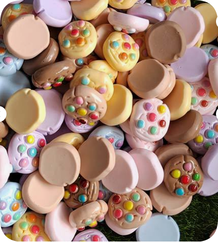
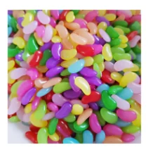
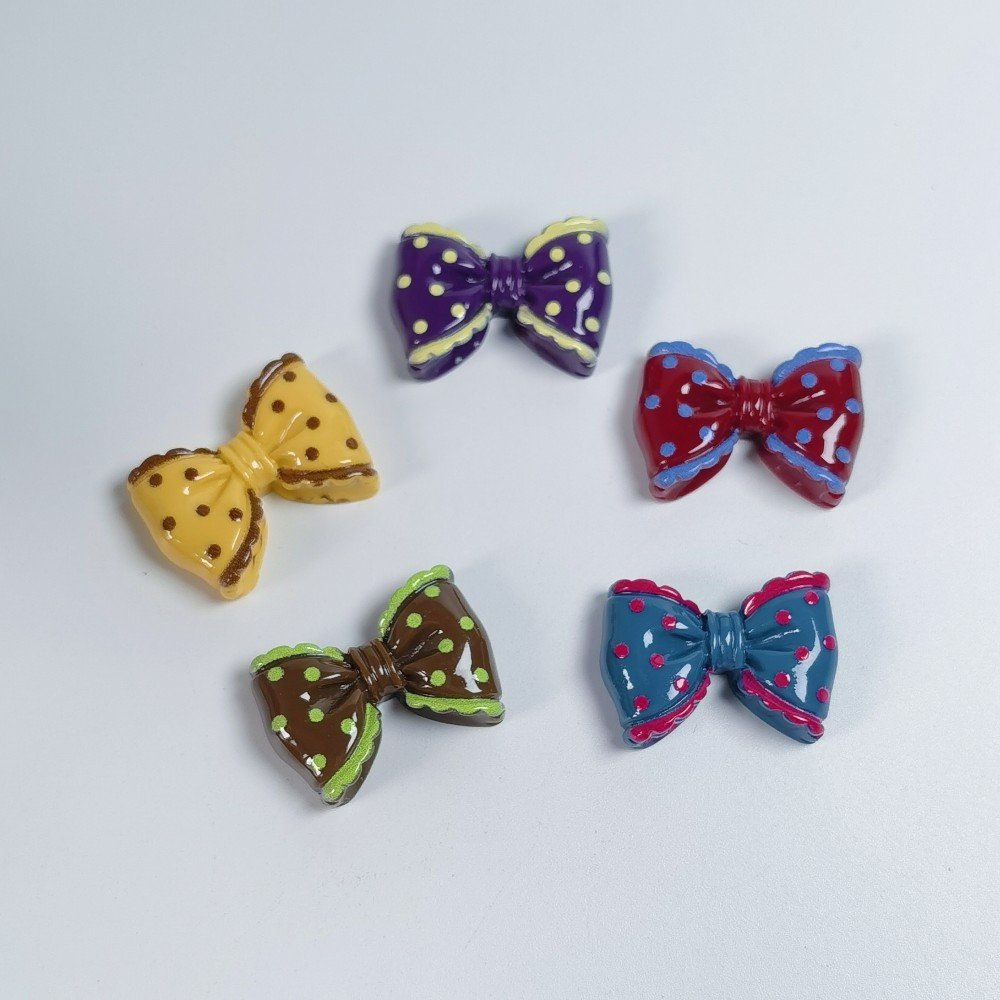

A small charm can set the whole direction of a project: a cookie for a bakery-themed clip, a bright candy shape beside a bag strap, or a bow on a gift tag. The useful starting point is the finished object and the way it will be handled. Choose the decorative pieces after you know where they will sit.
Choose the attachment before the color palette
For a glue-on project, ask for a clear reverse-side image and check the actual contact area against your base. A rounded miniature may need a different support from a flatback cabochon. For a hanging project, confirm the hole or loop and its dimensions, or select a carrier designed to hold a decorative piece. A product name containing “charm” does not establish an attachment.
Set out the base, decorative piece and any hardware together. Check that moving parts can open, that the decoration does not cover an edge that must flex, and that the finished object remains comfortable to use. Follow the adhesive or base manufacturer's instructions for the exact materials. Review the assembly on a sample before repeating it for a collection.
1. Make a cookie-themed hair clip
One small focal decoration can be enough for a simple clip. RW22372 is a resin cookie flatback assortment with a 21 mm source size reference. Its supplied front-and-reverse photograph helps you discuss the bonding area; individual mixed-piece dimensions and thickness still need sample confirmation.
- Plan the position. Lay one piece on the closed clip or a suitable decorative mounting base. Keep the hinge, spring and gripping surfaces clear.
- Check a full opening cycle. Open and close the clip while holding the decoration in the proposed position. Confirm the contact area and fixing method before bonding.
- Assemble and inspect a sample. Follow the base and adhesive instructions, then check the result before making a matching set.
The standard RW22372 bag contains random mixed designs and colors. It cannot guarantee two identical cookies for a pair. If matching pairs are central to your project, describe that requirement before ordering and ask whether a separate arrangement is feasible.

Resin cookie flatbacks
- Size reference
- 21 mm source reference
- Packing reference
- 100 pieces per bag
Standard bag: random mixed designs and colors; individual designs or colors cannot be selected.
View RW22372 details →Ask about RW22372
2. Build a bag charm or keychain around a suitable carrier
A colorful resin piece can provide a focal detail, but the connection must suit the way a bag or set of keys will move. For a piece without a confirmed hole or loop, use an appropriate mounting base or carrier rather than assuming a jump ring can pass through it. Confirm carriers, clasps, chain and other assembly parts separately.
- Choose the route to the key ring. List every connection: decoration to carrier, carrier to connector, and connector to ring or clasp.
- Check the hardware dimensions. CDK070 has a 30 mm ring reference. That number alone does not establish the usable opening, connector clearance or compatibility with a particular charm.
- Review the assembled sample. Check that connections close correctly and the decoration does not catch on the bag or interfere with keys. Ask for any missing connection dimensions before ordering in quantity.
RW4252 jelly bean decorations offer a 12 × 22 mm size reference for comparing a candy-themed layout. Review their reverse side and fixing method before selecting them for the carrier. CDK070 is sold as ring hardware; the two product records do not establish a preassembled or tested combination.

Resin jelly bean decorations
- Size reference
- 12 × 22 mm
- Packing reference
- 100 pieces per bag
Assorted candy colors. Confirm the reverse side and fixing method for your chosen project.
View RW4252 details →Ask about RW4252

Metal split key rings
- Size reference
- 30 mm ring reference
- Packing reference
- 100 pieces per bag
Hardware only. Confirm the connection and finish; a complete charm assembly is not included.
View CDK070 details →Ask about CDK070
For a hardware-led project, continue to the keychain components catalog. For a jewelry project, compare the jewelry findings range and confirm the actual attachment dimensions.
3. Add a resin bow to a gift tag, box or frame
A bow motif gives a gift a clear focal point without requiring a crowded layout. RW26898 is a polka-dot resin bow decoration with an approximate 17 × 26 mm size reference. Check the selected piece against the usable area of your tag, box lid or frame border.
- Mark the usable area. Leave room for the name, message, lid opening or photograph. Test the position with the actual decoration before fixing it.
- Choose one supporting detail. A ribbon, printed card or small accent can repeat a color from the bow. Confirm those materials separately from the resin SKU.
- Review handling and packing. Check that the decoration sits securely on the chosen surface and that the gift can be packed without pressure on the raised piece.
For a bookmark, keep any raised decoration clear of the part that sits between the pages. For a frame, keep it outside the photograph and any opening mechanism. A supplied decoration is a component: the finished gift, base and styling materials depend on your project.

Polka-dot resin bows
- Size reference
- Approx. 17 × 26 mm
- Packing reference
- 100 pieces per bag
Confirm the assortment, reverse side and fixing method. A hole or fitting is not established.
View RW26898 details →Ask about RW26898
For more seasonal ideas, see DIY Christmas gifts to make with family. For a dense phone-case layout, use the separate decoden supplies guide.
Compare these project materials before requesting a quote
| Reference | Size reference | Packing reference | Check for your project |
|---|---|---|---|
| RW22372 — Resin cookie flatbacks | 21 mm source reference | 100 pieces per bag | Standard bag: random mixed designs and colors; individual designs or colors cannot be selected. |
| RW4252 — Resin jelly bean decorations | 12 × 22 mm | 100 pieces per bag | Assorted candy colors. Confirm the reverse side and fixing method for your chosen project. |
| RW26898 — Polka-dot resin bows | Approx. 17 × 26 mm | 100 pieces per bag | Confirm the assortment, reverse side and fixing method. A hole or fitting is not established. |
| CDK070 — Metal split key rings | 30 mm ring reference | 100 pieces per bag | Hardware only. Confirm the connection and finish; a complete charm assembly is not included. |
These are source specification and packing references, not new physical measurements. “100 pieces per bag” describes the pack, not the minimum order. Confirm current availability, MOQ, packing, any assortment requirements and timing in your quotation. RW22372's standard mixed bag does not allow individual design or color selection.
Turn one successful sample into a repeatable project brief
After reviewing a sample, write down the selected SKU, base, fixing method and the number of pieces used per finished project. An illustrative ten-project plan using one decoration on each base calls for ten decorations; that planning count does not change the supplier's pack or MOQ. Add separately confirmed hardware and any extras your own packing process needs.
For a workshop, retail kit or handmade collection, send the same brief with your inquiry: project photo or sketch, selected product codes, desired number of finished items, quantities and units, destination, and packing requirements. If consistent color balance or matching pairs matter, make that explicit before confirming a mixed assortment. See how to brief a DIY craft kit and packing options for craft supplies.
Questions before choosing ready-made resin charms
Can every resin charm be attached with a jump ring?
No. A jump ring needs a suitable confirmed hole, loop or separate connector. Flatback decorations require another appropriate mounting route. Check the exact SKU and hardware dimensions.
Can I choose individual cookie designs from RW22372?
The standard bag is a random mixed assortment; individual designs and colors cannot be selected. Send any matching-pair or custom-assortment requirement for a separate feasibility review.
What should I send when asking about materials for my project?
Send product codes, the intended project, base or mounting method, quantity and unit, destination and packing requirements. Include the reverse-side, thickness or connection dimensions you still need confirmed.
Choose materials for your next project
Browse the resin charms catalog, shortlist the shapes you need, and send your project brief. We will review the selected components and order requirements with you.
Discuss your resin charm project